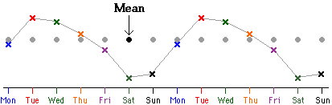

Moving averages
We showed at the start of this chapter that moving averages are effective for reducing the random fluctuations in a time series.
Moving averages can also be used to remove a seasonal effect, but the run length is critically important.
For seasonal data with cycle length n, an n-point moving average should be used.
For example, daily data have a cycle length of 7 days. Each 7-point running mean averages exactly one value from each day of the week (one value of each colour in the diagram below).

If, say, Saturday values are regularly lower than other days, the smoothed values for each day of the week will involve a Saturday and will be equally affected. The smoothed values for Saturdays will therefore not tend to be lower than other days. This removes the seasonal pattern.
Even cycle lengths
Unfortunately there is a complication when seasonal data have an even cycle length (such as monthly data with a cycle length of 12). When the cycle length is even, centred moving averages are required. For example, quarterly data have cycles of length 4 so centred 4-point moving averages should be used:

Similar definitions are used for other even values of n with half-weights on the two end values. Note that a 4-point moving average involves 5 values, not 4.
Monthly temperatures in Boulder, Colorado
The diagram below again shows mean monthly temperatures in Boulder, Colorado.
Use the control under the plot to investigate the effect of different moving averages. Observe that 12-point moving averages remove the seasonal effect.